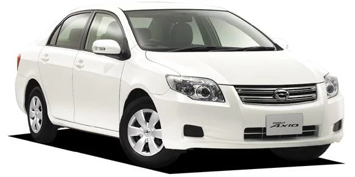
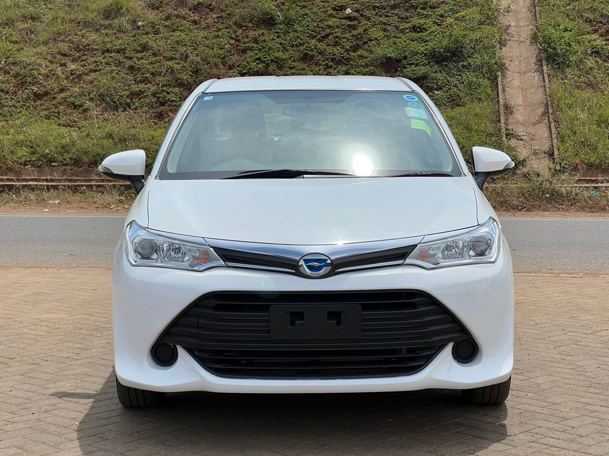
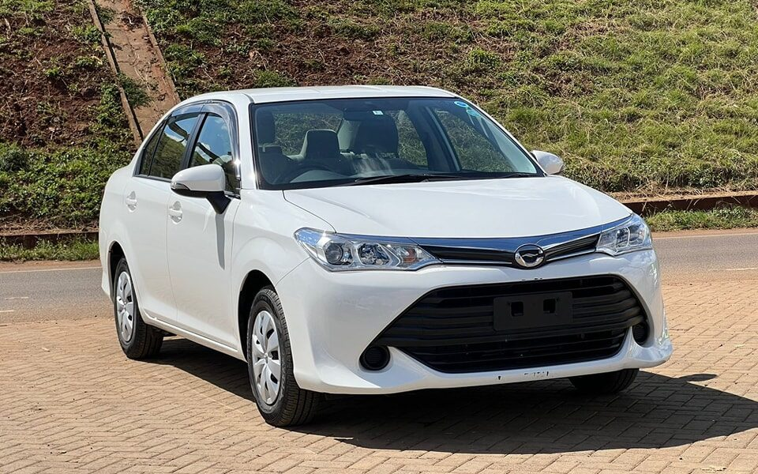
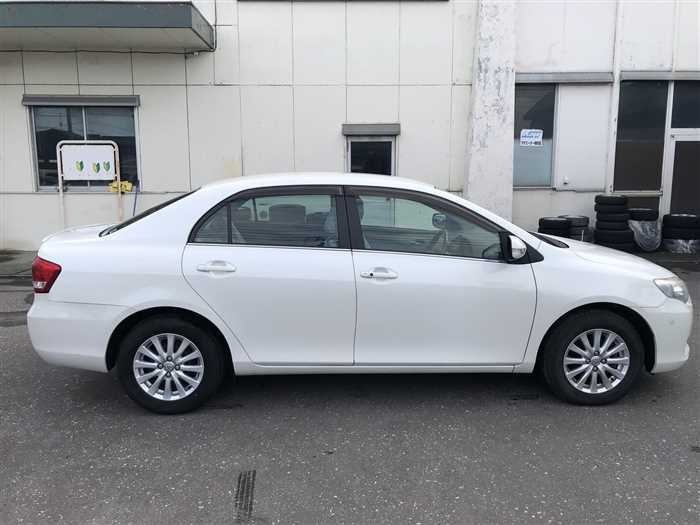
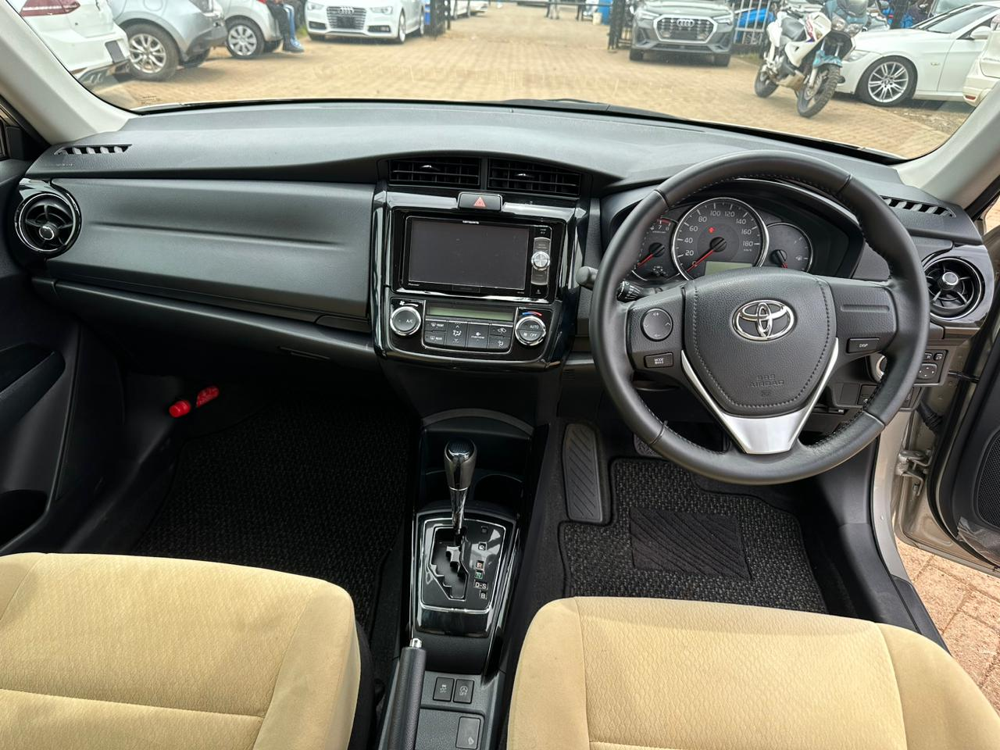
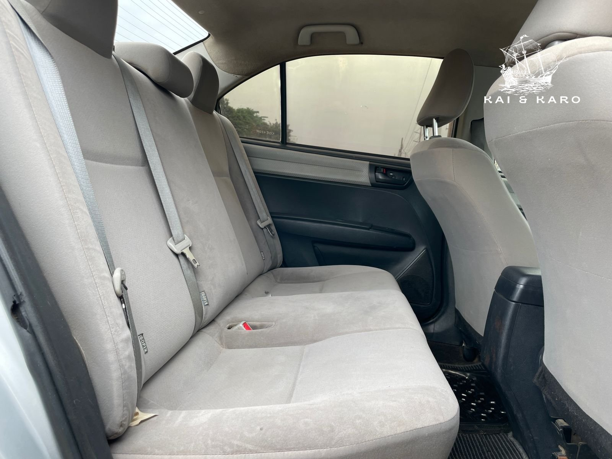
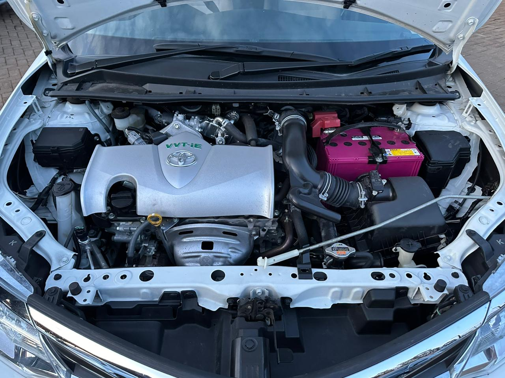

The 2012 Toyota Axio is a reliable and fuel-efficient sedan that offers a comfortable ride and practical features. It is known for its low maintenance costs and excellent resale value.
This Axio is in excellent condition with low mileage, making it a great choice for daily commuting and long drives alike.